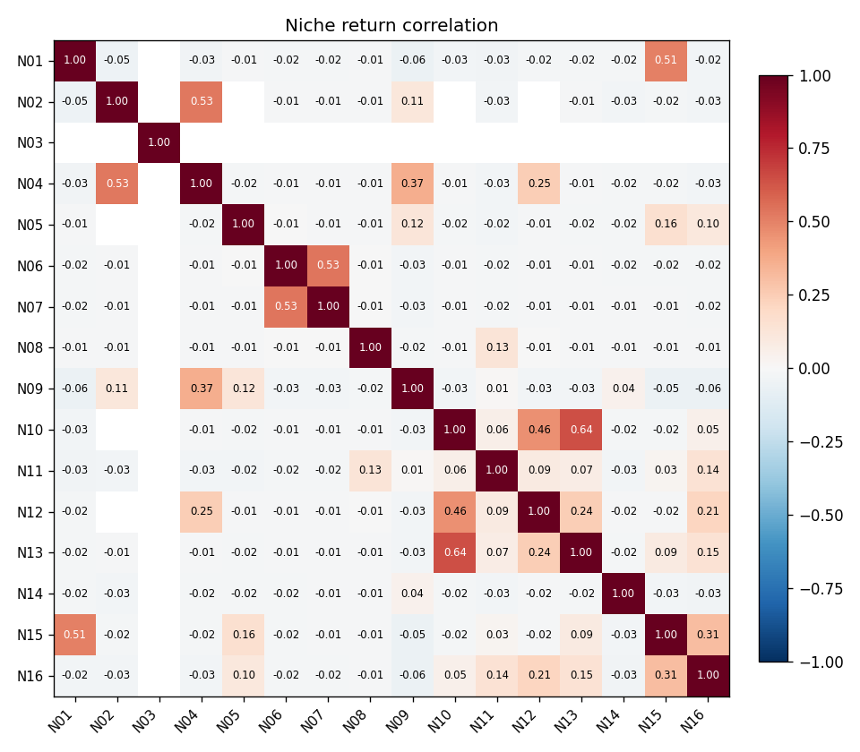
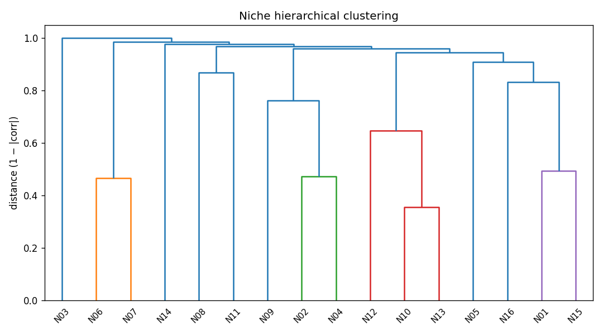
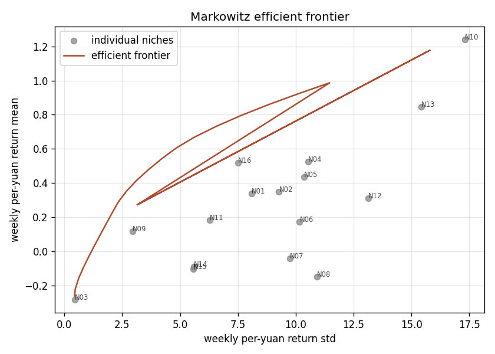
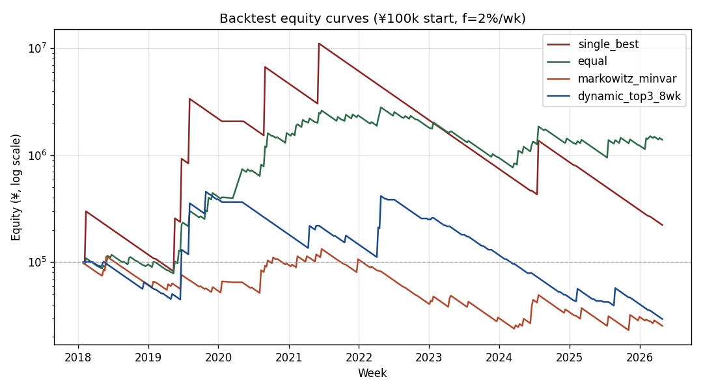

Total weeks in span: 415. A niche only contributes in weeks with ≥3 qualifying picks; sparse coverage limits the value of correlation-based diversification.
| id | label | weeks_with_bet | coverage_pct | mean_r | std_r | hit_rate |
|---|---|---|---|---|---|---|
| N01 | opt=1, sp=5-8, lg=Other | 146 | 35.2% | +96.03% | 13.640 | 2.1% |
| N02 | opt=0, sp=5-8, lg=Top5EU | 124 | 29.9% | +116.62% | 16.994 | 1.6% |
| N03 | opt=0, sp=5-8, hc=h1 | 118 | 28.4% | -100.00% | 0.000 | 0.0% |
| N04 | sp=5-8, lg=Top5EU | 211 | 50.8% | +103.01% | 14.764 | 1.9% |
| N05 | sp=5-8, hc=h1 | 244 | 58.8% | +73.90% | 13.518 | 1.6% |
| N06 | opt=0, sp=5-8, lg=LowerEU | 343 | 82.7% | +20.71% | 11.186 | 1.2% |
| N07 | sp=5-8, hc=h_unknown, lg=LowerEU | 359 | 86.5% | -5.02% | 10.480 | 0.8% |
| N08 | sp=5-8, lg=LowerEU | 372 | 89.6% | -16.63% | 11.528 | 0.5% |
| N09 | opt=0, hc=h2plus, lg=Top5EU | 256 | 61.7% | +18.70% | 3.748 | 10.9% |
| N10 | sp=5-8 (all) | 411 | 99.0% | +125.29% | 17.397 | 1.7% |
| N11 | opt=0, sp=3-5, hc=h1 | 411 | 99.0% | +18.52% | 6.320 | 3.6% |
| N12 | opt=0, sp=5-8 | 403 | 97.1% | +31.90% | 13.323 | 1.0% |
| N13 | sp=5-8, hc=h_unknown | 409 | 98.6% | +85.83% | 15.548 | 1.5% |
| N14 | opt=3, sp=3-5, hc=h_unknown | 414 | 99.8% | -9.06% | 5.613 | 2.7% |
| N15 | opt=0, sp=3-5, lg=LowerEU | 412 | 99.3% | -10.38% | 5.599 | 2.7% |
| N16 | opt=0, sp=3-5 | 414 | 99.8% | +51.81% | 7.510 | 4.3% |
Mean off-diagonal correlation: +0.038; mean |corr|: 0.068.

Distance = 1 − |corr|; linkage = average; cluster cut at d=0.7. Independent groups identified: 11.
| id | cluster |
|---|---|
| N06 | 1 |
| N07 | 1 |
| N08 | 2 |
| N11 | 3 |
| N02 | 4 |
| N04 | 4 |
| N09 | 5 |
| N10 | 6 |
| N12 | 6 |
| N13 | 6 |
| N01 | 7 |
| N15 | 7 |
| N16 | 8 |
| N05 | 9 |
| N14 | 10 |
| N03 | 11 |


Sparse weekly P&L makes Markowitz weights unstable. The columns below show the across-bootstrap mean weight and 5/95 percentiles per niche.
| niche | mean_w | std_w | p05 | p95 |
|---|---|---|---|---|
| N01 | 0.0123 | 0.0565 | 0.0000 | 0.0145 |
| N02 | 0.0712 | 0.1673 | 0.0003 | 0.5026 |
| N03 | 0.7511 | 0.2748 | 0.2520 | 0.9595 |
| N04 | 0.0064 | 0.0440 | 0.0000 | 0.0026 |
| N05 | 0.0106 | 0.0494 | 0.0000 | 0.0087 |
| N06 | 0.0095 | 0.0733 | 0.0000 | 0.0045 |
| N07 | 0.0164 | 0.0983 | 0.0000 | 0.0054 |
| N08 | 0.0765 | 0.2168 | 0.0000 | 0.6964 |
| N09 | 0.0228 | 0.0116 | 0.0038 | 0.0416 |
| N10 | 0.0003 | 0.0009 | 0.0000 | 0.0018 |
| N11 | 0.0029 | 0.0030 | 0.0000 | 0.0091 |
| N12 | 0.0100 | 0.0884 | 0.0000 | 0.0048 |
| N13 | 0.0011 | 0.0016 | 0.0000 | 0.0043 |
| N14 | 0.0063 | 0.0104 | 0.0000 | 0.0130 |
| N15 | 0.0017 | 0.0026 | 0.0000 | 0.0065 |
| N16 | 0.0008 | 0.0015 | 0.0000 | 0.0047 |
| strategy | CAGR | Sharpe | MaxDD | Calmar | final |
|---|---|---|---|---|---|
| single_best | +10.44% | 0.518 | -98.00% | 0.107 | ¥222,136 |
| equal | +38.00% | 0.753 | -72.67% | 0.523 | ¥1,392,912 |
| markowitz_minvar | -15.16% | -0.140 | -82.65% | -0.183 | ¥25,281 |
| dynamic_top3_8wk | -13.84% | 0.172 | -93.56% | -0.148 | ¥29,290 |
